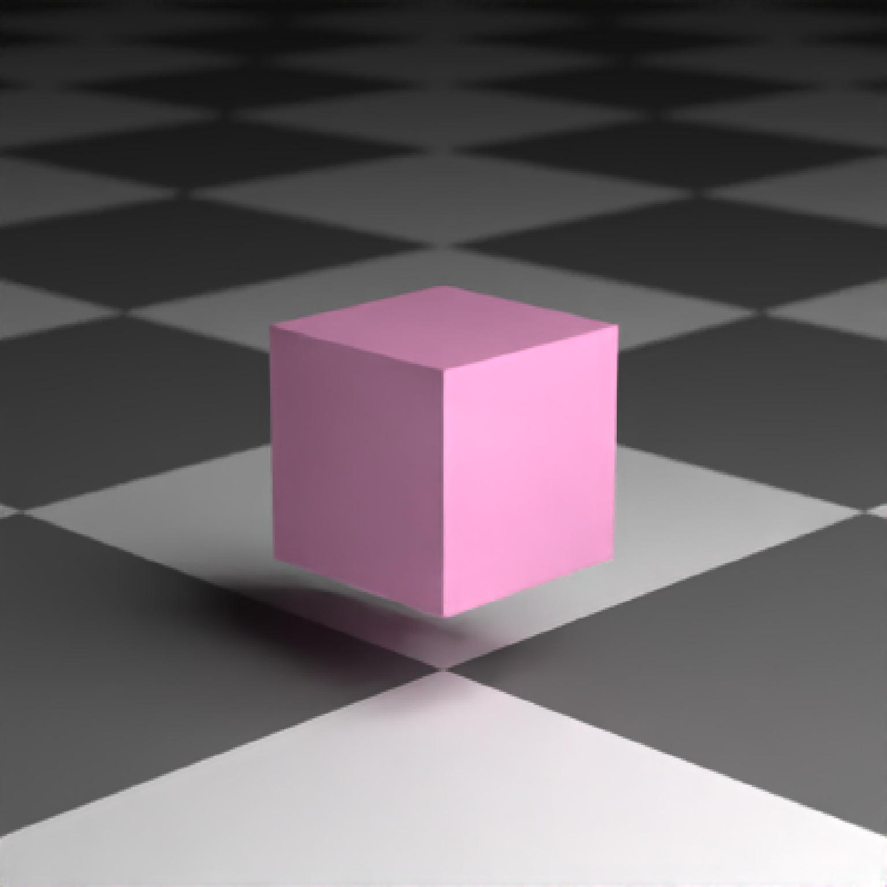
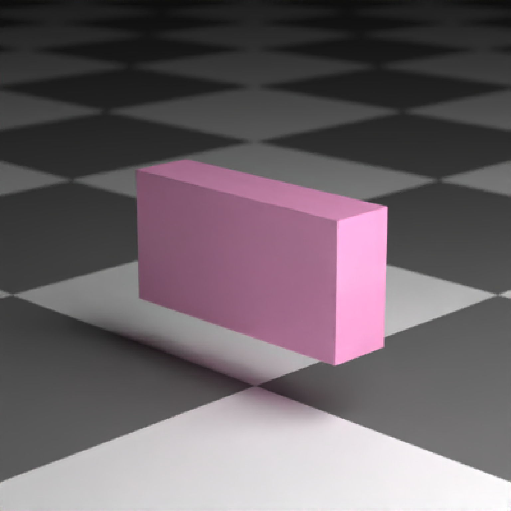
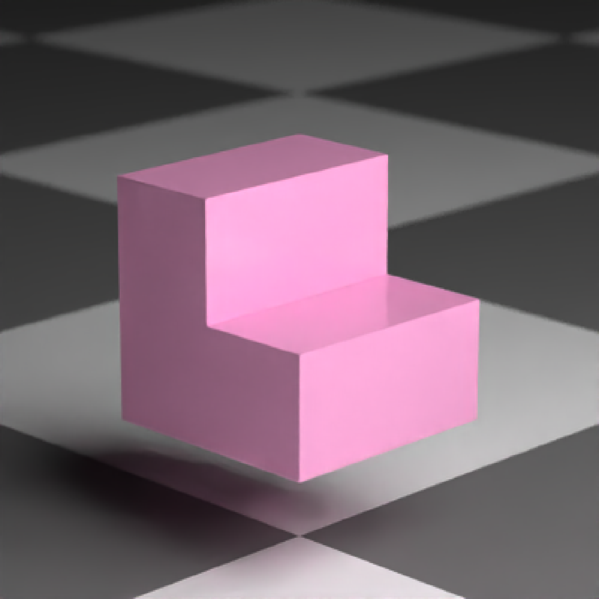

CSG Box
csg_box(x = 0, y = 0, z = 0, width = c(1, 1, 1), corner_radius = 0)Default `0`. An x-coordinate on the box.
Default `0`. A y-coordinate on the box.
Default `0`. A z-coordinate on the box
Default `c(1,1,1)`. Length-3 vector describing the x/y/z widths of the box
Default `0`. Radius if rounded box.
List describing the box in the scene.
if(rayrender:::run_documentation()) {
#Generate a box
generate_ground(material=diffuse(checkercolor="grey20")) %>%
add_object(csg_object(csg_box(), material=glossy(color="#FF69B4"))) %>%
add_object(sphere(y=5,x=5,radius=3,material=light(intensity=5))) %>%
render_scene(clamp_value=10,lookfrom=c(7,3,7))
}

if(rayrender:::run_documentation()) {
#Change the width
generate_ground(material=diffuse(checkercolor="grey20")) %>%
add_object(csg_object(csg_box(width = c(2,1,0.5)), material=glossy(color="#FF69B4"))) %>%
add_object(sphere(y=5,x=5,radius=3,material=light(intensity=5))) %>%
render_scene(clamp_value=10,lookfrom=c(7,3,7))
}

if(rayrender:::run_documentation()) {
#Subtract two boxes to make stairs
generate_ground(material=diffuse(checkercolor="grey20")) %>%
add_object(csg_object(csg_combine(
csg_box(),
csg_box(x=0.5,y=0.5,width=c(1,1,1.1)),operation="subtract"),
material=glossy(color="#FF69B4"))) %>%
add_object(sphere(y=5,x=5,radius=3,material=light(intensity=5))) %>%
render_scene(clamp_value=10,lookfrom=c(7,3,7),fov=13)
}
